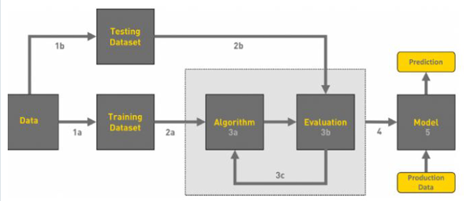
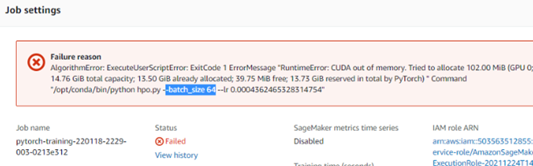
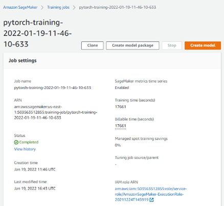
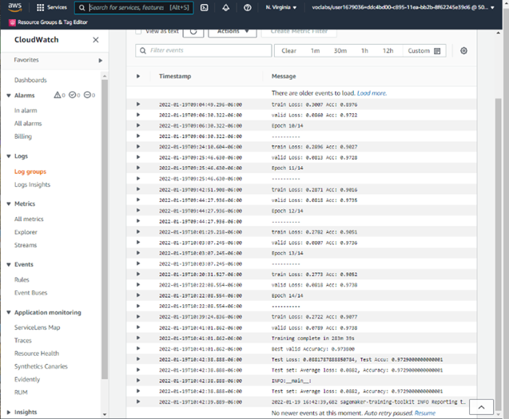
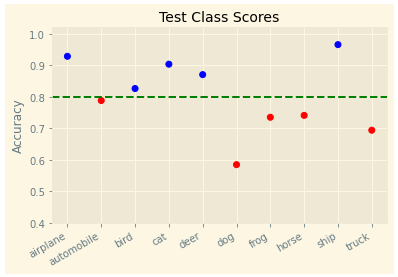
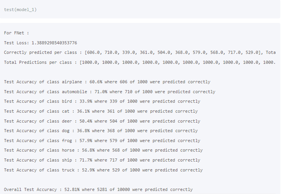
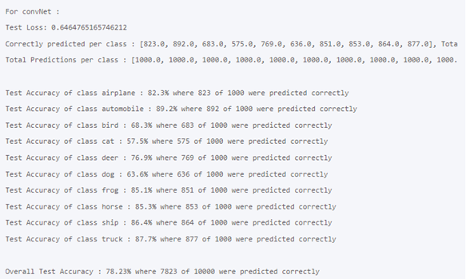

Image Classification
Capstone Project
Thien Ngan Doan
Udacity ML Engineer Nanodegree
Jan 2021
I. Overview
When learning this program, we studied the problems of image classification with 2 classes and with dog breed project of 133 classes. This project is also an image classification with the famous image dataset CIFAR-10 containing 10 classes, we will go from the basic knowledge of image data to the AWS process of training model and deploy its endpoint for predicting.
This project is focused on how to create image data for a problem of image classification and step to step from executing hyperparameter tuning to training and deploying endpoint for predicting. This project is a wonderful example; it is an awesome case of study.
My goal is studying each step from analyzing this type of data until predicting model to apply the same ideas in other similar projects in real productions on AWS.
II. Problem Statement
We examine the original byte data from cifar-10 pickle file and transform into all images to organize three folders train, test, and valid for the problem of image classification. We will determine the whole process on AWS:
1. Extract data from original byte-format data.
2. Create the image data directories train, valid, and test.
3. Try some pretrained models on local machine to have a best selected model for perform on AWS.
4. Copy the image data directories train, valid, and test into s3 bucket.
5. Tuning hyperparameters on AWS.
6. Training on AWS
7. Create endpoint to predict.
We use Pytorch to perform our models. We will use pretrained model densenet for our data. In this project, we will use densenet161 model on AWS to get the most powerful prediction of our models.
III. Evaluation Metrics
With this type of image classification problem, we use the best compatible metric is accuracy classification score.
IV. Data Exploration
We use the dataset provided by CIFAR-10 and CIFAR-100 datasets (toronto.edu).
url='https://www.cs.toronto.edu/~kriz/cifar-10-python.tar.gz'
save_name = 'cifar.tgz'
dest_dir='cifar10'
def get_cifar(url, save_name, dest_dir):
wget.download(url, save_name)
tf = tarfile.open(save_name)
tf.extractall(dest_dir)
get_cifar(url, save_name, dest_dir)
The original data is an zip file of format tar.gz, it consists of 8 pickled files containing data and related information. Six important files of data are:
- data_batch_1: pickled file contains 10,000 images.
- data_batch_2: pickled file contains 10,000 images.
- data_batch_3: pickled file contains 10,000 images.
- data_batch_4: pickled file contains 10,000 images.
- data_batch_5: pickled file contains 10,000 images.
- test_batch: : pickled file contains 10,000 images.
def unpickle(file):
import pickle
with open(file, 'rb') as f:
dict = pickle.load(f, encoding='bytes')
return dict
DIR='cifar10/cifar-10-batches-py/'
os.listdir(DIR)
From these files, we extract and process to transform them into three image data directories for training, validation, and testing. There are ten classes in our data, and the distribution of ten classes in each file is almost equally proportional.
Training data: 40,000 images of 4 files data_batch_1, data_batch_2, data_batch_3, and data_batch_4
Validation data: 10,000 images of file data_batch_5.
Testing data: 10,000 images of file test_batch
1. Process data from data_batch:
First, we create
1. train_dic: a list contains 5 dictionary of data from 5 files data_batch_1, data_batch_2, -, data_batch_5.
2. test_dic: a dictionary of data from test_batch.
3. batch_dic: a dictionary of data from batches.meta.
fname = DIR+'data_batch_'
files = [fname+str(k+1) for k in range(5)]
train_dic = []
files
for name in files:
train_dic.append(unpickle(name))
# len(train_dic)
test_dic = unpickle(DIR+'test_batch')
batch_dic = unpickle(DIR+'batches.meta')
Each batch data dictionary has 4 same keys:
dict_keys([b'batch_label', b'labels', b'data', b'filenames'])
The keys of batch_dic are:
dict_keys([b'num_cases_per_batch', b'label_names', b'num_vis'])
To examine one data batch to see inside clearly, we create a pandas dataframe contains the related data for easy processing. For example:
dt_train = train_dic[0][b'data']
print(dt_train.shape)
dt_train = pd.DataFrame(dt_train)
(10000, 3072)
Each batch has 10,000 rows of 3072 columns of uint8 number, so each row is data of a color image with resolution (32, 32) - 3072 = 3*32*32.
Similarly, we get:
- filename: from train_dic[0][b'filenames]
- label: from -train_dic[0][b'labels']
dt_labels = train_dic[0][b'labels']
dt_labels = pd.DataFrame({'label': dt_labels})
dt_filenames = train_dic[0][b'filenames']
dt_filenames = [item.decode() for item in dt_filenames]
dt_labels['filename'] = dt_filenames
Notice that filename must be decoded.
We write a function to transform train_dic and test_dic into compatible dataframes.
def df_fr_dict(dict):
'''
dict: dictionary having data 'label', 'filename' and 'raw-image'
'''
dt_labels = dict[b'labels']
# decode filename
dt_filenames = [item.decode() for item in dict[b'filenames']]
df = pd.DataFrame({'label': dt_labels,'filename': dt_filenames})
dt_data = pd.DataFrame(dict[b'data'])
df = pd.concat([df, dt_data], axis=1)
return df
First, we transform test data:
test = df_fr_dict(test_dic)
print(test['label'].value_counts(),'---\n', test.shape)
3��� 1000
8��� 1000
0��� 1000
6��� 1000
1��� 1000
9��� 1000
5��� 1000
7��� 1000
4��� 1000
2��� 1000
---
(10000, 3074)
Now, test dataframe has 10,000 rows, and there are 10 labels from 0 to 9, and there are 1,000 rows for each label.
We prepare for train dataframe and valid dataframe through a list df[].
df = []
for k, dict in enumerate(train_dic):
df.append(df_fr_dict(train_dic[k]))
print(df[k].shape)
(10000, 3074)
(10000, 3074)
(10000, 3074)
(10000, 3074)
(10000, 3074)
Now, we create train and valid:
train = df[0]
for k in range(1,4):
train = pd.concat([train, df[k]])
valid =df[4]
Dataframe train has 40,000 rows and dataframe valid has 10,000 rows. We have an almost uniform distribution for the 10 labels. -
|
valid['label'].value_counts() 5��� 1025 9��� 1022 3��� 1016 1��� 1014 0��� 1014 8��� 1003 4���� 997 6���� 980 7���� 977 2���� 952 |
valid['label'].value_counts() 2��� 4048 7��� 4023 6��� 4020 4��� 4003 8��� 3997 1��� 3986 0��� 3986 3��� 3984 9��� 3978 5��� 3975 |
2. Transform data from dataframes into image folders
We write a function to transform data from a dataframe into a compatible folder train, test, and valid, and attach a new column fullname to dataframe. Each folder has 10 child folders named from 10 labels (0, 1, -, 9).
We use the function imsave of matplotlib to save image file.
def write_images(df, dirname):
fullnames_list = []
image_size = 32*32
image_resolution = (32,32)
data = np.array(df.drop(columns=['label', 'filename']))
# if os.path.isdir(dirname) == False:
# os.mkdir(dirname) -
��� os.makedirs(dirname, exist_ok = True)
for j in range(10):
newdir = dirname+'/'+str(j)
- os.makedirs(newdir, exist_ok = True)����� -
# if os.path.isdir(newdir) == False:
# os.mkdir(newdir)
for n in range(df.shape[0]):
row = data[n].astype('uint8')
fullname = dirname + '/' + str(df['label'][n]) + '/' + str(df['filename'][n])
fullnames_list.append(fullname)
mat = list()
for k in range(3):
mat.append(np.reshape(row[k*image_size:(k+1)*image_size],
image_resolution))
image = np.dstack(tuple(mat))
plt.imsave(os.path.normpath(fullname), image)
tmp = pd.DataFrame({'fullname': fullnames_list})
tmp = pd.concat([tmp, df], axis=1)
return tmp
�The function is used easily.
valid = write_images(df[4], 'data/valid')
test = write_images(test, 'data/valid')
With train folder, we have a small loop to write into train folder and create dataframe train simultaneously:
train = write_images(train, 'data/train')
We write some code to check 3 new folders.
def check_files(dir):
'''
dir: directory for check filename lists
'''
name_list = []
for dirname, _, filenames in os.walk(dir):
for filename in filenames:
name_list.append(os.path.join(dirname, filename))
return name_list
for dir in ['data/train', 'data/valid', 'data/test']:
print(dir,'\t', len(check_files(dir)))
data/train �40000
data/valid �10000
data/test - �10000
Now, we save all into csv files for further use.
test.to_csv('test.csv', index=False)
train.to_csv('train.csv', index=False)
valid.to_csv('valid.csv', index=False)
3. Process data from batch_dic
Examine batch_dic:
batch_dic = unpickle(DIR+'batches.meta')
batch_dic.keys()
dict_keys([b'num_cases_per_batch', b'label_names', b'num_vis'])
We get the class names from here and save to csv file classes.csv.
class_id = []
class_name = []
for k, val in enumerate(batch_dic[b'label_names']):
class_id.append(k)
class_name.append(val.decode())
classes = pd.DataFrame({'class_id': class_id, 'class_name': class_name})
classes.to_csv('classes.csv', index=False)
classes
-
4. Process data to s3
Now, we are ready to copy our data into s3 bucket:
sagemaker_session = sagemaker.Session()
role = sagemaker.get_execution_role()
region = "us-east-1"
data_bucket = 'cap2-ngandn18'
# Upload data to S3 bucket.
datapath = 'data'
inputs = sagemaker_session.upload_data(path=datapath, bucket=data_bucket, key_prefix=datapath)
print(inputs)
We use bucket cap2-ngandn18 to save folder data.
5. Conclusion
After these steps of analyzing and processing the data relationship, we create 3 image folders train, test, and valid and 4 csv files train.csv, valid.csv, test.csv, and classes.csv. After that, we copy folder data into bucket cap2-ngandn18.
V. Models on Aws Sagemaker
The workflow of machine learning can be displayed in the following chart.

Overview of Machine Learning flowchart.
We perform our image classification model through three steps.
1. Tuning hyperparameters
We create file hpo.py for tuning job, in this file we use densenet161 model.
def net():
'''
Initializes our model
A pretrained model: densenet161
'''
num_classes = 10
modelname='densenet161'
model = models.densenet161(pretrained=True)
# reset final fully connected layer
num_features = model.classifier.in_features
model.classifier = nn.Sequential(
nn.Linear(num_features, 256),
nn.ReLU(),
nn.Dropout(0.3),
nn.Linear(256, num_classes))
model = model.to(device)
print(modelname)
return model
We calculate the normalized numbers mean and standard deviation of our data to have a better result for transforming our model.
# Update mean, std 2022-01-13 cifar-10
mean = [0.437687221685991, 0.4735875158811764, 0.4905213840275673]
std = [0.2475770728439971, 0.2313360013602289, 0.2351076898744994]
Loss criterion is CrossEntropyLoss and optimizer is optim.SGD. On testing on local machine and Kaggle, optim.SGD has more efficiency than optim.Adam, then We will use optim.SGD in this project.
loss_criterion = nn.CrossEntropyLoss()
optimizer = optim.SGD(model.parameters(), momentum=0.9, lr=0.0005, weight_decay=0.0005)
Full details hpo.py are in the submission.
We prepare for tuning job.
# Declare ranges
from sagemaker.tuner import (
IntegerParameter,
CategoricalParameter,
ContinuousParameter,
HyperparameterTuner,
)
hyperparameter_ranges = {
"lr": ContinuousParameter(0.0004, 0.001),
"batch_size": CategoricalParameter([16, 32, 64])
}
With the estimator executed on instance type ml.g4dn.4xlarge and metric is average test loss, we use Pytorch framework version 1.9 and python version 3.8 to get the best performance for tuning job.
instance_type='ml.g4dn.4xlarge'
from sagemaker.pytorch import PyTorch
estimator = PyTorch(
entry_point="hpo.py",
role=role,
py_version='py38',
framework_version="1.9",
instance_count=1,
instance_type=instance_type
)
objective_metric_name = "average test loss"
objective_type = "Minimize"
metric_definitions = [{"Name": "average test loss",
"Regex": "Test set: Average loss: ([0-9\\.]+)"}]
tuner = HyperparameterTuner(
estimator,
objective_metric_name,
hyperparameter_ranges,
metric_definitions,
max_jobs=4,
max_parallel_jobs=2,
objective_type=objective_type,
)
With many time of testing on local machine and on Kaggle, this training process gets much time, so we use instance_count=1 to make sure our Aws credit is not over budget.
In tuning, there are 2 jobs failed because of CUDA out of memory with batch_size 64, our data is too big for this instance-type correspondence. Two successful training bobs in tuning process let us get best hyperparameters.

|
Since our student policy of timeout on Aws gateway, and the tuning time is too long - about 5 hours for one training job, so after 10 hours we can't get these best hyperparameter by code, we can use the Sagemaker interface to view best training job to get manually. |
|

{kind=link}
Then we set our model hyperparameters by copying from this page.
lr = '0.0008486603267461696'
batch_size = '16'
And now, we prepare something to create the training job for our model.
2. Training our model
From the tuning job, we find the new powerful instance type for the training job, and from the Aws g4dn page, we use the powerful ml.g4dn.12xlarge with large GPU memory for our training job. File train_model.py is used for an entry_point.
# Create and fit an estimator
hyperparameters = {'batch_size': batch_size,
'lr': lr} # Training with best parameters
instance_type='ml.g4dn.12xlarge'
estimator = PyTorch(
role=sagemaker.get_execution_role(),
instance_count=1,
instance_type=instance_type,
entry_point="train_model.py",
framework_version="1.9",
py_version="py38",
hyperparameters=hyperparameters,
profiler_config=profiler_config, # include the profiler hook
debugger_hook_config=debugger_hook_config, # include the debugger hook
rules=rules,
)
estimator.fit({'train': s3_data_dir},wait = True)

We want to get the information of debugging and profiling, but once more, because of our student policy of timeout on Aws gateway, our notebook gets lost connection, so we cannot get these info as expected. Although we select a very powerful instance, the successful training process takes nearly about 5 hours - 17661 seconds.

Look in the Cloud watch log, we can see a very good result after 15 training epochs:
- Train accuracy:�������� 0.9077 ~ 91%
- Valid accuracy: ������� 0.9738 ~ 98%
- Test accuracy: ��������� 0.9729 ~ 97%
From the train loss and valid loss, we see that valid is still decrease, so the training is not overfitting, we can see that if we have more training epochs, we can get more accuracy score.
From the Sagemaker interface and Cloud watch, we can get more information from this job, and we will use the training job name for deploying our model to predict image class.
3. Deploying our model
From our training job name, we create the endpoint on Aws.
training_job_name = 'pytorch-training-2022-01-19-11-46-10-633'
from sagemaker.predictor import Predictor
from sagemaker.pytorch import PyTorchModel
jpeg_serializer = sagemaker.serializers.IdentitySerializer("image/jpeg")
json_deserializer = sagemaker.deserializers.JSONDeserializer()
model_name = 's3://{}/{}/output/model.tar.gz'.format(bucket,training_job_name)
class ImagePredictor(Predictor):
def __init__(self, endpoint_name, sagemaker_session):
super(ImagePredictor, self).__init__(
endpoint_name,
sagemaker_session=sagemaker_session,
serializer=jpeg_serializer,
deserializer=json_deserializer,
)
fn_model = PyTorchModel(model_data=model_name,
role=role,
entry_point='inference.py',
py_version='py38',
framework_version='1.9',
predictor_cls=ImagePredictor
)
File inference.py is used as an entry point. An important note is the used model in this entry point must be the same as the model in our training job - train_model.py.
from time import time
since = time()
fn_predictor = fn_model.deploy(
# data_capture_config = data_capture_config,
initial_instance_count=1,
instance_type="ml.m5.large"
)
print(f'Time deploy: {time() - since} s')
endpoint_name = fn_predictor.endpoint_name
print(endpoint_name)
The first time, there is an error:
ModelError: An error occurred (ModelError) when calling the InvokeEndpoint operation: Received
server error (500) from primary with message "Given groups=1, weight of size [96, 3, 7, 7], expected input[1, 4, 224, 224] to have 3 channels, but got 4 channels instead
In the previous image classification project dog-breed with resnet pretrained model, there is no such an error. There is a different format of data input between resnet and densenet pretrained model. We examine the predict_fn function in inference.py and see that the torch object size is [1,4,12,12], our prediction code requires the size [1,3,12,12], all the value of the torch [1,4,12,12] is 1.
def predict_fn(input_object, model):
logger.info('In predict fn')
img_size = 224
test_transform = transforms.Compose([
transforms.Resize(img_size),
transforms.ToTensor(),
])
logger.info("transforming input")
input_object = test_transform(input_object)
input_object = input_object.to(device)
with torch.no_grad():
logger.info("Calling model")
prediction = model(input_object.unsqueeze(0))
return prediction
We adjust our code a little bit - only insert one line to adjust the torch object after tr�norming:
input_object = input_object[:3,:,:]
And it is ok to create the endpoint with the deploy time is about 251 seconds.
--------!Time deploy: 250.71183037757874 s
pytorch-inference-2022-01-19-20-17-22-679
We write some code to get classid and fielname of a random test image for our prediction.
testset = pd.read_csv('test.csv')
labels = list(testset['label'])
fullnames = list(testset['fullname'])
ef get_file_classid():
row = random.randint(0, len(testset)-1)
return labels[row], fullnames[row]
# ldic[row].values()
print(get_file_classid())
(0, 'data/test/0/airbus_s_000778.png')
Now we try one prediction from our endpoint.
classid, filename = get_file_classid()
with open(filename, "rb") as f:
payload = f.read()
from sagemaker.serializers import IdentitySerializer
with open(filename, "rb") as f:
payload = f.read()
since = time()
fn_predictor.serializer = IdentitySerializer("image/jpeg")
inference = fn_predictor.predict(payload)
print(f'Time Prediction: {time() - since} s')
Time Prediction: 0.45589208602905273 s
Wonderful result, only about 0.46 second for the prediction. We examine the output and how to get the predicted result.
print(type(inference[0]),'\n',len(inference[0]), '\n', inference[0])
prediction = np.argmax(inference)
if prediction == classid:
print('Prediction is correct')
else:
print('Prediction is not correct')
print(prediction, filename, classid)
<class 'list'>
�10
-[-0.31202423572540283, -2.3471438884735107, 1.5576268434524536, 5.096643924713135, 1.6828807592391968, 1.3144971132278442, 3.891735076904297, -2.656201124191284, -1.17906653881073, -3.5364975929260254]
Prediction is correct
3 data/test/3/mouser_s_000061.png 3
Since there are 10 labels, predicted result is a list of 10 float number and the predicted label is the position in list that is the maximum value of the list. We use function argmax of numpy to get the predicted label. In this example, test file is data/test/3/mouser_s_000061.png, and the real label is 3, so the prediction is correct.
Now we try 100 predictions:
since = time()
preds = []
count = 0
nums = 100
for k in range(nums):
classid, filename = get_file_classid()
classes.append(classid)
files.append(filename)
with open(filename, "rb") as f:
payload = f.read()
inference = fn_predictor.predict(payload)
infers.append(inference[0])
prediction = np.argmax(inference[0])
preds.append(prediction)
if prediction == classid:
count = count + 1
print(f'Time {nums} Prediction: {time() - since: .02f} s')
accu = count / nums
print(f'Accuracy of 30 predictions: {accu: .04f} = {accu*100: .0f}%')
Time 100 Prediction:- 12.43 s
Accuracy of 100 predictions:- 0.8500 = 85%
The accuracy score of 100 predictions is about 85%, and the executive time of predicting is less than 13 second.
Now we are ready to predict all the test folder.
from time import time
since = time()
infers = []
preds = []
nums = len(fullnames)
for k in range(nums):
filename = fullnames[k]
with open(filename, "rb") as f:
payload = f.read()
inference = fn_predictor.predict(payload)
# Save the inference to check later
infers.append(inference[0])
prediction = np.argmax(inference[0])
# Save the prediction to check later
preds.append(prediction)
print(f'Time {nums} Prediction: {time() - since: .01f} s')
Time 10000 Prediction:- 1155.7 s
Total executive time of predicting 10,000 test image is 1155.7s, less than 20 minutes. And we calculate the accuracy score of all test image folder. We use pandas dataframe to save results to get the exact result quickly and can save for reuse later.
df_prediction = pd.DataFrame({'label': labels,'pred': preds})
N = len(labels)
equal_inds = df_prediction['label'] == df_prediction['pred']
nums = sum(equal_inds)
accu = nums / N # accu
print(f'Accuracy of all test directory predictions: {accu: .04f} = {accu*100: .0f}%')
df_prediction.to_csv('prediction.csv', index=False)
Accuracy of all test directory predictions:- 0.8035 = 80%
And we check the accuracy score of each class:
equal_inds = df_prediction['label'] == df_prediction['pred']
df_equal = df_prediction['label'][equal_inds]
df_equal.reset_index(drop=True, inplace=True)
classes = {}
for j in range(len(df_equal)):
k = df_equal[j]
if k not in classes.keys():
classes[k] = 1
else:
classes[k] += 1
CLS_LENGTH = 1000
cls_ratio = []
for k in range(10):
cls_ratio.append(classes[k]/CLS_LENGTH)
print(f'Accuracy of class {k}: {cls_ratio[k]: 0.4f}')
Accuracy of class 0:- 0.9280 ~ 93%
Accuracy of class 1:- 0.7880 ~ 79%
Accuracy of class 2:- 0.8260 ~ 83%
Accuracy of class 3:- 0.9030 ~ 90%
Accuracy of class 4:- 0.8700 ~ 87%
Accuracy of class 5:- 0.5850 ~ 58%
Accuracy of class 6:- 0.7350 ~ 74%
Accuracy of class 7:- 0.7410 ~ 74%
Accuracy of class 8:- 0.9650 ~ 96%
Accuracy of class 9:- 0.6940 ~ 69%
or we can use class name:
Accuracy of class airplane: 0.9280 ~ ���� �93%
Accuracy of class automobile: 0.7880 ~ �� �79%
Accuracy of class bird: 0.8260 ���� ~ ��� �83%
Accuracy of class cat: 0.9030 ����� ~ ��� �90%
Accuracy of class deer: 0.8700 ���� ~ ��� �87%
Accuracy of class dog: 0.5850 ����� ~ ��� �58%
Accuracy of class frog: 0.7350 ���� ~ ��� �74%
Accuracy of class horse: 0.7410 ��� ~ ��� �74%
Accuracy of class ship: 0.9650 ���� ~ ��� �96%
Accuracy of class truck: 0.6940 ��� ~ ��� �69%
The class dog has the smallest accuracy 58% and the class ship has the maximum accuracy 96%. We have a small plot to summary our predicted result.

4. Research
When researching the same project with our data, in this page CIFAR 10 | Machine Learning Master.
The author got the scores from two models with 50 training epochs.


Our result is much better. We have a very good result after 15 training epochs
- Train accuracy:�������� 0.9077 ~ 91%
- Valid accuracy: ������� 0.9738 ~ 98%
- Test accuracy: ��������� 0.9729 ~ 97%
VI. Conclusion
1. We examine and analyze the CIFAR-10 tar.gz file to transform from pickle files into 3 folders of useful image data.
2. We copy our image data into s3 bucket for Aws Sagemaker Pytorch project.
3. We perform a tuning job for our model on ml.g4dn.4xlarge , and get the best hyperparameters for our training job.
4. We complete the training job for our model on Aws successfully.
5. We get a very high accuracy for train, valid, and test that are recorded in Cloud Watch logs.
6. We deploy an endpoint for prediction on ml.m5.large successfully.
7. We try many predictions with our test images and get many wonderful results. -
8. We analyze the accuracy of each classes in 10,000 test images and have a small plot to display this result.
9. We completely perform the Pytorch image classification problem from training to have a useful model, and from this model we deploy the endpoint on Aws to predict with 10,000 test images with the calculation of the successful ratio of each class.
10. We have a research to compare the result with ours.
VII. Improvement
1. We can review and test more to find the reason why the accuracy through endpoint is much lower than the result from training - 97% and 80%.
2. We can test more to compare more results from two different optimizer optim.SGD and optim.Adam. In this project, we use optim.SGD because when trying on local machine and Kaggle, optim.Adam is less effective than optim.SGD.
3. We can test more suitable image size in torchvision transform to get the best suitable size. When test this model with the image size is 224, we get the higher accuracy than inage size of 324, 512, 1024.
4. We can test more various model to have the most suitable one for our data.
5. We can use other compatible machine learning models to learn more with these wonderful datasets.
6. There are many aspects that we can study to have more efficient model.
VIII. References
1. sagemaker.readthedocs.io-using_pytorch.html
2. sagemaker.readthedocs.io-train-a-model-with-pytorch
3. sagemaker.readthedocs.io-deploy-pytorch-models
4. Amazon EC2 G4 Instances - Amazon Web Services (AWS)
5. A 2021 Guide to improving CNNs-Optimizers: Adam vs SGD - ML
6. Transfer Learning for Computer Vision Tutorial - PyTorch Tutorials
7. Matplotlib.pyplot.plot - Matplotlib 3.5.1 documentation